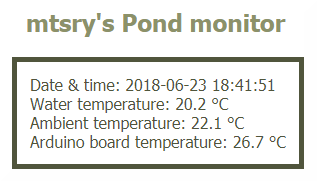

Vijver
Het kwam allemaal in een stroomversnelling met onderstaande foto.
Bron: www.tuinen-deflou.be
Maar er is nog een lange weg te gaan om dit idee om te vormen in een 'formele' vijver.
Het terras op 23 september 2017.
Na voorgevormde vijvers en zelfs het laten polyesteren bekeken te hebben, zal het uiteindelijk een vijver met een 3D EPDM folie worden. Het ontwerp is een rechthoekige vijver van 80 cm diep met een ondiepe zone van 40 cm.

Waterplanten worden bewust langs een zijde geplaatst om vrij zicht te hebben vanuit de veranda en de rest van het terras.
Dit zal niet de allergrootste vijver worden. De berekeningen komen uit op 1700 liter inclusief het volume van de filter. Maar is eerder mooi geïntegreerd in het houten terras opdat er zelfs van genoten kan worden tijdens het ontbijt in de veranda.
Op onderstaande foto is getracht om met twee stukken karton de grootte en de plaats van de vijver aan te geven. De filter staat ook op zijn definitieve plaats. Uiteraard komt deze onder het terras te zitten op gelijke hoogte als de vijver.
(13 november 2017)
Ondertussen zijn de eerste bouwmaterialen (zand, grind en een gedeelte van de betonblokken) geleverd netjes beschermd tegen de regen ... en de sneeuw.
(11 december 2017)
Na nog eens een keer vastgesteld te hebben dat de tijd vliegt, was het eindelijk zo ver om het terras 'netjes' op te breken. De sneeuw was al lang verdwenen, maar dankzij de poolwervel (polar vortex) paste de temperatuur er wel bij.
(24 februari 2018)
(24 februari 2018)
Toen brak het moment aan voor het zware werk: tussen de 20 en 30 cm stabilisé. Er was geen ontkomen aan dus werd het wat zwaardere materiaal bovengehaald. En na 2 bezoeken aan het containerpark konden we de dag netjes (en op tijd) afsluiten.
(24 februari 2018)
(24 februari 2018)
De sneeuw zorgde gisteren niet alleen voor de zwaarste avondspits van het jaar, maar het bleek ook verstandig te zijn om wat later met het vervolg van de werkzaamheden te starten. Gelukkig speelde de temperatuur in ons voordeel. Net zoals de sneeuw langzaam verdween, was ook de stabilisé na 3 bezoeken aan het containerpark verdwenen ... opgeruimd staat netjes.
(3 maart 2018)

(3 maart 2018)
Na twee dagen graven werd de vooropgestelde diepte bereikt. Als tijdelijke opslag van de gele zand worden big bags gebruikt. Deze zal gebruikt worden om alles terug aan te vullen eenmaal de muren van de vijver gemetst zijn. Hiermee is dan ook een kantelpunt bereikt... vanaf nu kan er opgebouwd worden.
(10 maart 2018)
(10 maart 2018)
(11 maart 2018)
De volgende stap is het gieten van de vloerplaat.
(13 maart 2018)
Eigenlijk viel dit wel te verwachten ... met dank aan het Belgische weer.
Ook hier is opgeruimd staat netjes van toepassing. Ondertussen is ook de wachtbuis voor de elektriciteit ingegraven daar deze onder de vloerplaat komt te liggen om aan de juiste kant van de filterkamer uit te komen.
(18 maart 2018)
Na het leggen van de bouwfolie en de puzzel van stukken betonnet, werd de betonmolen voor een ganse namiddag opgestart. Even gezocht naar de optimale werkwijze ... en dan de ene na de andere lading draaien met een mooi resultaat.
(24 maart 2018)
(24 maart 2018)
Omdat er vorst aan de grond werd voorspeld, werd alles nog netjes afgedekt waarbij er dankbaar gebruik gemaak werd van de XPS isolatieplaten die uiteindelijk zullen fungeren als vijverisolatie.
(25 maart 2018)
Eventjes van het zomerse weer geprofiteerd om de vijver af te tekenen op de vloerplaat en wat betonblokken op de juiste plaats te leggen. Zo zie je goed het verschil tussen de grootte van het uitgegraven gat en de grootte van de vijver.
(8 april 2018)
Zoals echte metsers werd eerst een constructie met palen gebouwd om onze metselkoord tussen te spannen. Rechte muurtjes dienen recht te zijn ... alleen de handigheid van een echte metser ontbrak. Na heel wat gezwoeg liggen de eerste twee rijen betonblokken.
(15 april 2018)
(15 april 2018)
En de derde rij met de Murfor metselwerkwapening ...
(19 april 2018)
En tenslotte de vierde rij gevolgd door het metselwerk om de ondiepe zone te creëren ...
(22 april 2018)
Snel nog even de laatste kant geïsoleerd en met gele zand aangevuld.

(23 april 2018)
Het belangrijkste nieuws is dat ze de vijver zijn komen opmeten met een Leica handmatige laser scanner. Nu is het wachten op de op maat gemaakte 3D EPDM folie.
Ondertussen van de tijd gebruik gemaakt om de folie doorvoer te plaatsen en het ganse 50 mm buizenwerk inclusief schuifkraan naar de filterkamer toe.
(27 april 2018)
Na eerst de ondiepe zone verder afgewerkt te hebben, werd de wachtbuis voor de elektriciteit verder ingegraven. Ondertussen is ook de voedingkabel erin getrokken en deze dient nog enkel aangesloten te worden in de kelder.
(28 april 2018)
(28 april 2018)
Het noodzakelijk werk van alle voegen onderhanden genomen te hebben, is ook achter de rug. Principieel zou nu het beschermvlies gelegd kunnen worden alvorens de 3D EPDM folie te plaatsen.
Nadat de filterkamer tot de juiste hoogte met grind opgevuld werd, konden de filtervaten geplaatst worden. Het begint stilletjes aan op de uiteindelijke vijver te lijken inclusief de groene DRiBOX voor alle elektrische aansluitingen.
(30 april 2018)
Gerecycleerde kunststof latten dienen als randafwerking en in het bijzonder om de folie op zijn plaats te houden. Als deksel voor de filtervaten wordt er gebruik gemaakt van een stuk golfplaat... ook in het zwart.
En als eerste stap in het terugplaatsen van het terras is er een betonnen balk gegoten tussen het bloemenperkje dat opnieuw aan te leggen is, en de vijver. Om extra water af te voeren is er een 'kanaal' voorzien dat naar dezelfde zone loopt als waar de overloop van de vijver in uitkomt.
(8 mei 2018)
Nu is ook de tweede en laatste betonnen balk gegoten. Met een restje beton zonder grind uiteraard zijn de twee overlopen netjes 'rond' gelegd. Nu is het wachten op de levering van de vijverfolie.
(14 mei 2018)
(14 mei 2018)
Door omstandigheden is de waterlelie 'Snow Princess' eerder ter plaatse aangekomen dan de vijverfolie. Netjes geplant in een mengsel van een deel kleikorrels op drie delen vijverpotgrond en onder water gezet, zal de waterlelie tijdelijk verblijven in een blauwe Flexi Tub totdat ...
(17 mei 2018)
Nadat eerst nog heel wat aansluitingen op de filter werden gemaakt, werd het beschermvlies gelegd. Een spuitbus met lijm zorgde ervoor dat dit ook netjes bleef liggen.
(19 mei 2018)
In de loop van de namiddag werd dan eindelijk de 3D vijverfolie geplaatst en kon het vullen beginnen. 's Avonds werden de randen nog afgewerkt en de waterval op een tijdelijke manier in dienst genomen. De pomp werd opgestart ...
(19 mei 2018)
Na een dag was het al tijd om de vijver en de filter een beetje te herinrichten. Na de filtervaten met de juiste filtermaterialen gevuld te hebben, werd de filter opgestart door nitrificerende bacteriën toe te voegen aan het water. De waterlelie werd op de juiste plaats gezet en de flora groeide verder aan met zuurstof-, oever- en drijvende planten.
(20 mei 2018)
Wie had dit kunnen denken ... na iets meer dan een week.
(26 mei 2018)
En het grootste deel van het terras ligt terug na heel wat zweten ... door het warme weer.

(26 mei 2018)
(26 mei 2018)
En een dag later zijn ze met z'n twee.
(27 mei 2018)
Drie zijden van het terras rond de vijver zijn klaar. De volgende stap is nu de randafwerking en dan pas het gedeelte over de filter. Het bloemenperkje zal tussendoor aan de beurt zijn.
(27 mei 2018)
En nu dus met randafwerking ...
(28 mei 2018)
... en de randafwerking van de vierde zijde met waterval.
(29 mei 2018)
Enerzijds het bewijs dat het bloemenperkje is afgewerkt en anderzijds dat de eerste bewoners zijn toegekomen: 8 goudvissen waaronder 2 shubunkins.
(2 juni 2018)
(2 juni 2018)
Het is duidelijk dat het project op zijn einde loopt. Er dienen enkel nog wat niet zichtbare zaken afgewerkt te worden. Het avontuur kan beginnen. Er was eens een school van 10 goudvissen (er zijn inderdaad 2 shubunkins bijgekomen) ...
(7 juni 2018)
(7 juni 2018)
Een van de belangrijkste waterwaarden is de temperatuur. Daarom is een thermometer zo goed als noodzakelijk, maar je hebt thermometers en thermometers. Is dan vanop afstand met je smartphone de watertemperatuur aflezen een overbodige luxe? Het is in ieder geval een leuk project met een Arduino Uno voorzien van een ethernet en SD card shield en twee Pt100 breakout boards. Een real time clock mag dan uiteraard ook niet ontbreken.
(23 juni 2018)

(23 juni 2018)
Na het laatste bezoek van een reiger met 3 verdwenen en 1 gewonde goudvis moest er ingegrepen worden. Een van de manier is draden rond de vijver te spannen zodat hij gehinderd wordt en schrikt bij het in / naar de vijver stappen. Nu maar hopen dat het werkt...
(16 juni 2019)
De sporen van een bezoekje van de waterleliekever zijn duidelijk zichtbaar ... zeker van zijn nageslacht.
(1 augustus 2020)